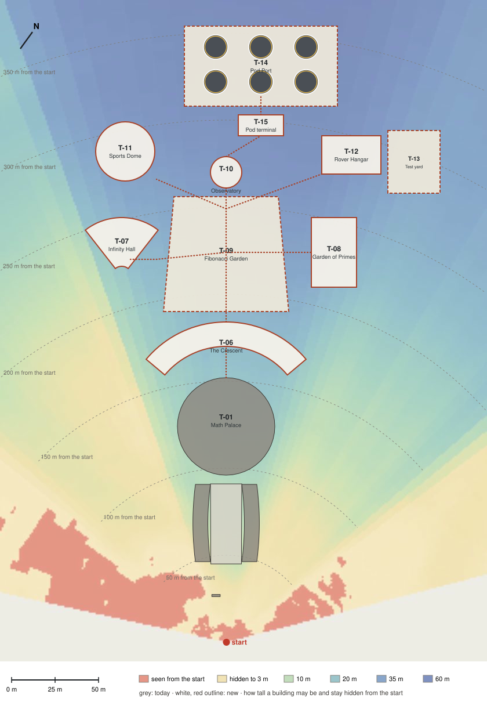

TTMath campus, phase 2
The campus grows to about three times its size on the slope behind the Math Palace, where the ground falls 15 to 20 m to the plain, and all of it is sealed: every room, court and garden is under a roof, a glass vault or a dome, and every building is joined to the next by a sealed link, so you go everywhere in shirt sleeves. People meet the outside only at airlocks; only the pods and the rovers go out. From the start nothing new can be seen: every building stays under the ridge's line of sight.

Floor area today: about 3,420 m². New: 24,473 m². Together: 27,893 m², 8.2 times today's.
The buildingsEach new building: what it is for, its size, how tall it may be
The roverA new rover that looks the partThe pod portParking for flying pods, ready for travel
Also in phase 2
- The Ring (Jim, 5 Oct 2026: "why classroom building are half? please build the circle around the dome, like apple headquarter building"; "much more future proof and impressive than it"): the Crescent grows into one building all the way round the dome (T-06), with the garden ring between them under glass (T09-01). The wings stand where it passes, so their rooms move into it and they come down. It is set into the slope: two storeys behind and beside the dome, one on the right front where the hill rises, the Gate Hall two storeys tall at the front, and on the left front, where the start looks down through a dip in the ridge, only the lower floor, beside a sunken grove (T09-06), so the campus still stays hidden until you reach the ridge.
- Sealed (Jim: "all open space should be covered by dome or sealed"; "the entrance is not sealed by dome. it needs to"): the entrance under a glass dome with its airlock (T-04), the garden ring under a glass vault, the garden gallery and the garden domes under glass (T-09), sealed links between the buildings (T-17); people meet the outside only at airlocks, and only vehicles go out.
- Bigger classrooms, higher ceilings (Jim: "class rooms are all too small and roof are too low"): every classroom about 17 by 12 m under a 4.5 m ceiling.
- Flying pods on anti-gravity (Jim: "on mars air is so little and can hardly support flying pod … use anti gravity technology"): no rotors; a halo drive round the cabin, like the Crown's drives at Arcadia. They dock at the pod dock off the Ring's right side (T04-03), where a glass bridge and a docking collar take you straight in.
- More real look everywhere: furniture, wood, the dome's glass and frame, and real plants.
- No power plant on the campus: it is on the grid of the city nearby; the armillary sundial that stood where the solar field was moves into the garden ring.